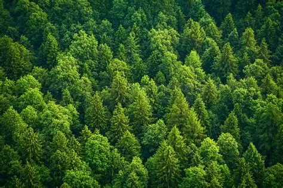
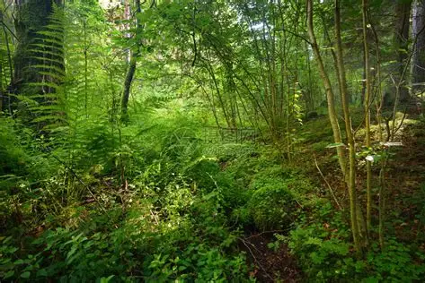
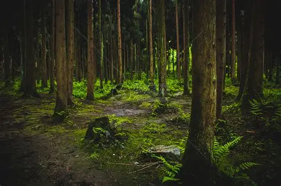
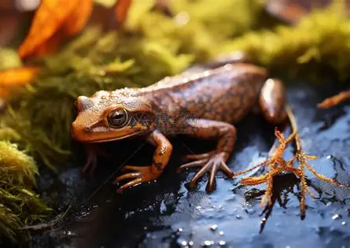
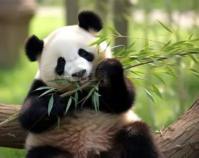
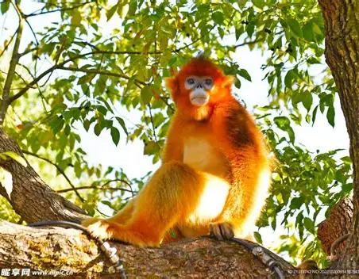
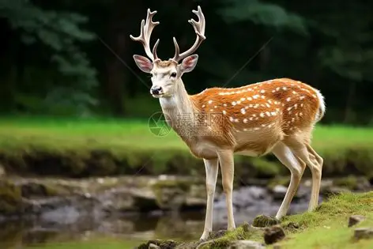

森林是地球上生物多样性最丰富的陆地生态系统之一，为众多动物提供了食物、庇护所和繁殖场所。从热带雨林到温带针阔混交林，再到高山针叶林，不同类型的森林孕育着各具特色的动物群落。大熊猫、金丝猴、梅花鹿等珍稀物种是森林生态的代表。

阳光最充足的区域，是鸟类、灵长类和树栖动物的重要栖息地。金丝猴、松鼠等动物在这里活动觅食。

光线较弱，是小型哺乳动物和两栖动物的天堂。梅花鹿、野兔等在此活动。

落叶层和土壤是昆虫、两栖类和小型哺乳动物的家园，也是分解者和营养循环的关键区域。
森林动物进化出高度特化的生理结构，以适应树栖生活、隐蔽捕食和复杂生态关系。


保护级别：国家一级
中国国宝，主要以竹子为食，是森林生态的标志性物种。

保护级别：国家一级
毛色金黄，尾巴极长，是珍稀树栖灵长类。

保护级别：国家一级
体态优雅，身上有梅花状斑点，是典型的森林食草动物。
森林是地球之肺，维持着全球碳氧平衡和气候稳定。保护森林动物不仅能维护生物多样性，还能防止水土流失、调节气候、涵养水源。禁止非法砍伐和偷猎，是守护绿色家园的重要举措。